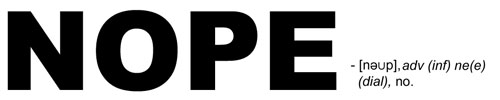

Time for NQR? Nope.

Since quite a lot of people have been asking, I guess it’s about time to announce that NQR 12 will, if at all, not take place anytime soon. But as sad as that may sound, there’s no reason to get overly frustrated about it.
Over the last weeks the EQL guys have been pretty patient with the NQR staff, giving way to them since it was actually their “turn” to run a season. However, with EQL being more or less ready to launch a season and NQR being far from that, I guess it’s only rational to let them take the slot. Any further delay would simply be counterproductive.
For now, the fate of NQR remains somewhat uncertain. We’ll know more in a few months…
Until then, I suggest you get your boys together and prepare for EQL. Stay tuned for further announcements.
sad news imo. what are the reasons?